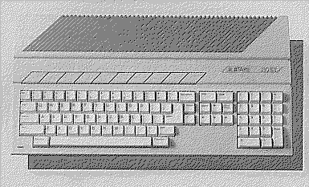

Previous
Next
TOC
Der Atari 130ST
Der Atari 130ST verfügte über 128 Kilobyte Hauptspeicher und wurde
1985 auf der Comdex in Las Vegas von Atari dem Publikum vergestellt.
Nachdem dann aber die Preise für die Hauptspeicherchips aber am
sinken waren und das TOS nicht viel freien Arbeitsspeicher bei 128
Kilobyte Ram für den Anwender übrig ließ, beschloß man den 130ST
garnicht erst auf den Markt zu bringen, sondern direkt den 520ST
mit 512 Kilobyte Ram den Endkunden anzubieten.
Der 130ST hat statt der 256Kbit Chips halt 64Kbit Chips als Haupt-
speicher auf der Platine sitzen, dies ist auch der grund weshalb die
MCU mit 64Kbit Chips umgehen kann. Der rest ist baugleich mit der
Platine des 520ST Computers der ersten Produktionsserie.

Kapitel Der Atari 130ST, Seite 1